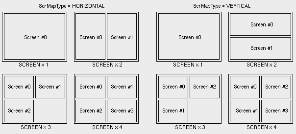

| vfr - Volflex rendering API - |
class vfrDrawArea
Class Hierarchy
Header files
- #include "vfrDrawArea.h"
Definitions
- VFR_MAX_SCREEN_NUM
- vfrDrawAreaクラスが持つことができるスクリーンの最大数( = 4)
- ScrMapType
- スクリーン配置タイプ
| HORIZONTAL | 横方向優先
|
| VERTICAL | 縦方向優先
|
- void vfrDrawArea()
- デフォルトコンストラクタ
- virtual ~vfrDrawArea()
- vfrDrawAreaオブジェクトを破壊する。
public methods / variables
- virtual void redraw()
- 再描画を行う(純粋仮想関数)
- virtual void notice()
- 描画内容の変更通知を行う(純粋仮想関数)
- virtual void rumor(vfrScreen* s)
- スクリーンの破壊通知を受け付ける(純粋仮想関数)
- s 破壊されるスクリーン
- virtual void chkNotice()
- 描画内容の変更検査を要求する(純粋仮想関数)
- virtual Point2 getSize()
- 描画領域のサイズ(pixels)を返す(純粋仮想関数)
- virtual void drawRubberBox(const Point2&
p0, const Point2& p1)
- 描画領域内にラバーボックスを描く(純粋仮想関数)
- p0 ラバーボックスの始点座標
- p1 ラバーボックスの終点座標
- void setRubberBoxColor(const vector4 rbc)
- ラバーボックスの色を設定する
- rbc ラバーボックスの色
- void getRubberBoxColor(vector4& rbc) const
- ラバーボックスの色を取得する
- rbc ラバーボックスの色の格納領域
- void setRubberBoxLineWidth(const GLfloat rblw)
- ラバーボックスの線幅を設定する
- rblw ラバーボックスの線幅(pixel)
- GLfloat getRubberBoxLineWidth() const
- ラバーボックスの線幅を返す
- void setRubberBoxLineType(const StippleType rblt)
- ラバーボックスの線種を設定する
- rblt 線種タイプ
- StippleType getRubberBoxLineType() const
- ラバーボックスの線種を返す
- Bool addScreen(vfrScreen* s)
- スクリーンを登録する。登録に成功するとTRUEを返す。
- スクリーンは、1つのvfrDrawAreaインスタンスにVFR_MAX_SCREEN_NUM個まで登録できる。
- s 登録するスクリーンへのポインタ
- Bool remScreen(vfrScreen* s)
- 登録されているスクリーンの中に指定されたスクリーンと同じものがあれば、リストから削除する。
実際にリストから削除した場合、TRUEを返す。
- s 登録削除するスクリーンへのポインタ
- void remapScreen()
- 描画領域内でのスクリーン再配置を行う。
スクリーンの登録または削除を行うと、自動的に実行される。
- int whichScreen(const int x, const int y)
- 指定されたウインドウ座標が含まれるスクリーンのスクリーン番号を返す。
スクリーンが張られていない領域の場合、-1 を返す。
- x X座標値
- y Y座標値
- int setCurScreen(const int cs)
- カレントスクリーンを設定する
- cs カレントスクリーンに設定するスクリーンのスクリーン番号
- void setScrBorderMode(const Bool sbm)
- カレントスクリーンボーダーモードを設定する
- sbm カレントスクリーンボーダーモード(デフォルト: TRUE)
- Bool getScrBorderMode()
- カレントスクリーンボーダーモードを返す
- vfrScreen* getScreen(const int ns)
- 指定されたスクリーン番号のスクリーンを返す。
指定されたスクリーン番号のスクリーンが存在しない場合はNULLを返す。
- ns スクリーン番号
- void setScreenMapType(const ScrMapType smt)
- スクリーンのレイアウトポリシーを設定する
- smt レイアウトポリシー
- ScrMapType getScreenMapType() const
- スクリーンのレイアウトポリシーを返す
- vfrDispatch& getDispatcher()
- イベントディスパッチャーを返す
Description
vfrDrawAreaクラスは、描画領域機能を定義する純粋基底クラスである。
インスタンスを作成することはできない。
Screens
vfrDrawAreaクラスは、複数のスクリーンを持ち、
これらを管理する。
vfrDrawAreaクラスのインスタンスが持つことができるスクリーンの数は
最大でVFR_MAX_SCREEN_NUMであり、
この数を越えてスクリーンの登録を行うことはできない。
vfrDrawAreaインスタンスにスクリーンが登録または
登録削除されると、自動的にスクリーンの
再配置が行われる。
スクリーンの再配置は、スクリーンの数によってFig.1のように行われる。

Fig.1 Screen Layout
スクリーン再配置は、vfrDrawAreaがリサイズされた場合にも自動的に実行される。
いづれの場合も、vfrDrawAreaのサイズをもとに
各スクリーンのビューポート設定も
同時に行われる。
Event Handler
vfrDrawAreaクラスは、ウインドウシステムからアプリケーションにパスされる
様々なイベント(Windowsではメッセージ)を、クラス内部のイベントハンドラーで処理し、
vfr独自の仮想イベントとして再構成する。
クラス内部のイベントハンドラーは、独自の状態遷移表に基づき、
イベントディスパッチャーを介して取得した
イベントに登録されている
アクションをコールする。
{kind=link}